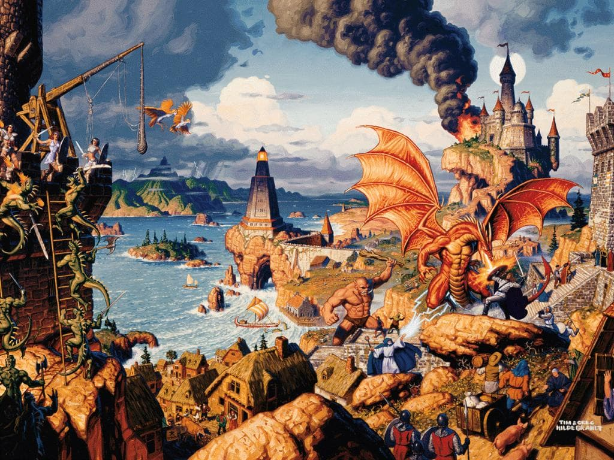
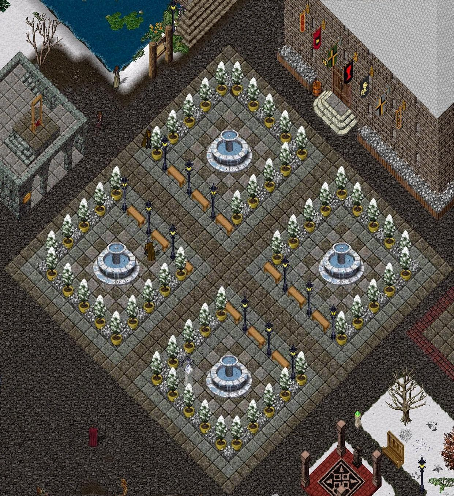

Tato stránka vznikl proúspěšný absolvování předmětu 4IZ268 a také pro můj osobní projekt - vývoj staré nostalgické hry: Ultima Online. Cílem stránek je popsat status, vývoj a správa hry Ultima Online na shardu Andarie.
O Ultimě Online
Ultima Online je MMORPG hra, odehrávající se ve fantasy světě. Jako v téměř každé této hře je nutné, aby si člověk vypracoval postavu od úplných začátků až k silnému a konkurenceschopnému válečníkovi, mágovi či řemeslníkovi. Hru vydala v roce 1997 společnost Origin Systems.
O Andarii
Český shard Andaria vznikl roku 2002 malou českou komunitou fascinovanou Dračím Doupětem (DnD). Založili proto Andarii s prvky RolePlay (hrát postavu s přesvědčením dobra, zákonitého dobra, zla a šílenství). Tento prvek je hlavní rozdíl od ostatních shardů v Česku/Slovnesku.
V roce 2008 zažívala Andaria největší rozmach. Server, který postavili tehdejší GM-team (správci shardu) přestal stíhát náporu hráčů. Každý večer se objevovalo přes 110 hráčů a hráči zažívali silné lag-spiky. Hráči začali tedy tvořit k večerům různé herní akce jako plesy, trhy a různé společenské aktivity místo chozením do dungeonů a obecného boje, které díky lag-spikům bylo nevyspitatelné.
Touto dobou se rozšířila myšlenka o převedení sfery (jádra Ultimy Online) z původního c++ jazyku, který byl omezen hlavně tím že nebyl Open-source do C#, kde se mohlo vyvíjem bez omezení a hlavního Performance problému, který je bez pochyby běh na jednom vláknu.
Problém migrace z sfery v C++ do C# jinak zvané jako RunUO je obrovský. Už po čtyřech letech vývoje Andarie vzniklo tolik nových systémů, věcí, kouzel a lokací, že migrace je tak obrovky náročná, že migraci považujeme za nemožnou. Andaria má totiž od roku 2002 vlastní dějovou linii a je třeba jí zachovat kvůli hráčům. Stejně jako postavy a jejich majetek se stejnou funkcionalitou. V tehdejší době byli 4 hlavní skriptaři a odhadovali práci na rok bez toho aby dělali cokoli jiného (vyjma práce). Aktuálně jsou aktviní skriptaři 2. Převod by byl proto na několik let.
Z tohoto důvodu Andaria zůstává na sféře o verzi 0.56b o které je zbytek tohoto webu.
